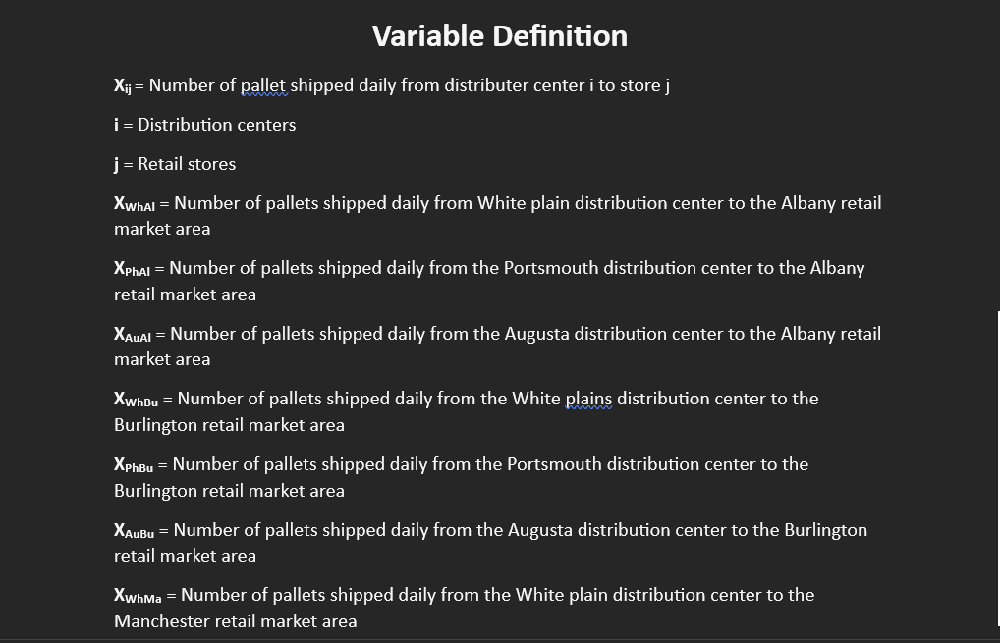
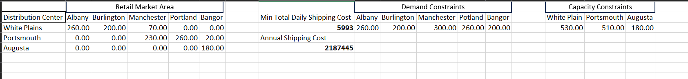
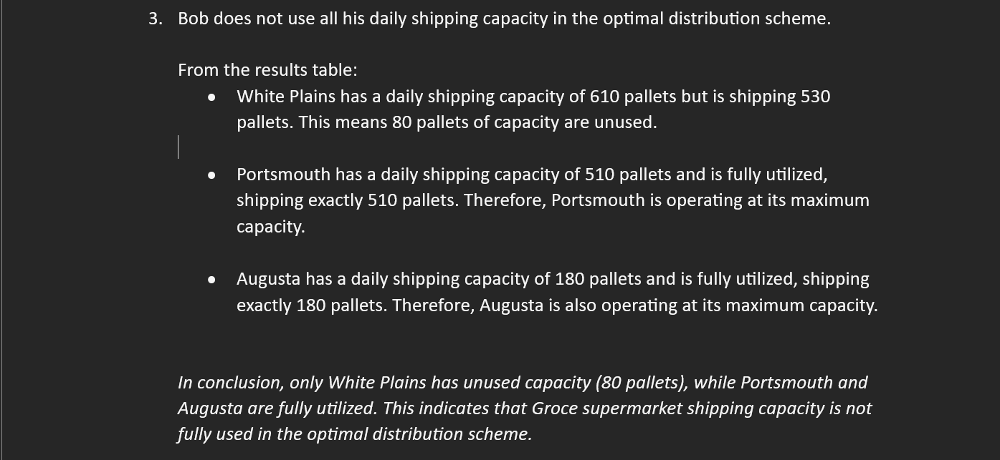

Optimal Distribution Strategy for PrimeGroce Supermarket Chain
INTRODUCTION
PrimeGroce, a national supermarket chain, operates in four U.S. states and has a network of retail stores supplied by company-owned distribution centers. To streamline operations, PrimeGroce assigned a project to develop an optimal distribution scheme for minimizing daily shipping costs while meeting the daily demand of each store. The objective was to use linear programming to determine the most cost-effective way of shipping products from distribution centers to retail stores while adhering to demand and capacity constraints.
PROBLEM STATEMENT
PrimeGroce operates three distribution centers, located in White Plains, NY; Portsmouth, NH; and Augusta, ME, and supplies five retail stores in Albany, NY; Burlington, VT; Manchester, NH; Portland, ME; and Bangor, ME. The daily demand for each store is specific, and the distribution centers have capacity limits based on labor and truck availability. PrimeGroce requires a detailed analysis to determine the optimal daily pallet distribution to each store, while minimizing total shipping costs.
Assignment Task 1
Formulate the Linear Programming Model:
1. variables to represent the number of pallets shipped daily from each distribution center to each store.
2. write out the total daily shipping cost objective function.
3. the structural constraints based on store demand and distribution center capacities.
Assignment Task 2
Run Solver to Determine Optimal Distribution:
1. Using the Solver tool, determine the optimal number of pallets shipped from each distribution center to each retail market area.
2. What is the minimum total daily shipping cost.
3. Calculate the annual shipping cost based on daily costs.
Assignment Task 3
Capacity Utilization Check:
1. Analyze whether PrimeGroce uses all of its daily shipping capacity under the optimal distribution scheme. Provide an explanation based on the Solver results.
Assignment Task 4
Alternative Solution Exploration:
1. Determine if another distribution scheme could yield the same minimum daily shipping cost. Explain how this conclusion was reached.
Detailed Report
Yes, there is a potential for an alternative distribution scheme that achieves the same minimum total daily shipping cost.
Upon reviewing the Solver Sensitivity Report, it is observed that the shadow price for the capacity constraint of the White Plains distribution center is 0. In linear programming, a shadow price of 0 indicates that this constraint is non-binding—in other words, the current capacity limit of White Plains does not restrict or influence the optimal solution.
Since this capacity limit is not fully utilized in achieving the minimum cost, adjusting the White Plains capacity could yield alternative solutions with the same optimal cost. This flexibility suggests that there may be multiple ways to meet the demand at minimal cost by reassigning shipments across the distribution centers without affecting the overall daily shipping cost.
Assignment Task 5
Impact of New Store on Shipping Costs:
1. PrimeGroce is considering building a new store in one of the major market areas, which would increase daily demand by 30 pallets. Identify the market area where the new store would have the least impact on shipping costs, calculate the impact on daily shipping costs, and describe any changes to the optimal distribution scheme.
Assignment Task 9
Truck Requirements for Backhaul Opportunities:
PrimeGroce imposes a new requirement for at least 6 trucks on the White Plains-to-Manchester route to take advantage of backhaul opportunities. Reformulate the problem in terms of trucks (assuming each truck holds 24 pallets), add the minimum truck constraint, and calculate the effect on annual shipping costs and truck usage.
Detailed Report
• Total Annual Shipping Cost(Trucks) = $108,295.50
• Total Number of Trucks = 56
• Total Unused Pallet Slot = 124
Assignment Task 10
Eliminating a Distribution Center:
PrimeGroce considers eliminating one distribution center and increasing the remaining centers’ capacities by 300 pallets each to meet demand. Introduce binary variables for each distribution center, add constraints, and re-run Solver to determine the best center to close, the revised optimal distribution scheme, and the new minimum daily shipping cost.
Conclusion
This project for PrimeGroceshowcases my expertise in applying advanced optimization techniques to real-world distribution challenges. By developing a comprehensive linear programming model, I was able to identify an optimal distribution scheme that minimizes daily and annual shipping costs while meeting complex constraints, including capacity limits, demand requirements, and newly introduced backhaul opportunities.
Through this project, I demonstrated my ability to optimize resources, reduce operational costs, and deliver practical solutions in supply chain management.